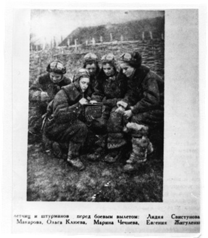
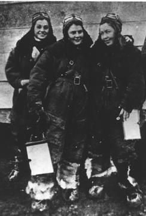
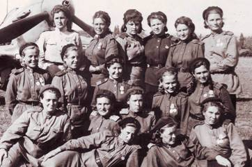
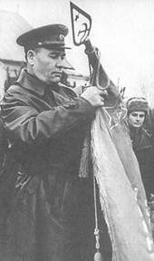
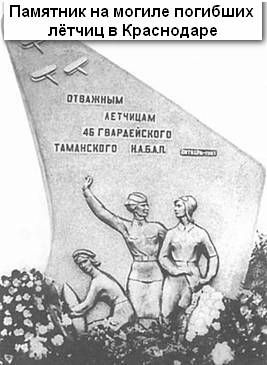

За неимением свободных машин, способных противостоять немецким «Мессерам», руководство решило оснастить формируемый полк учебно – тренировочными У – 2 конструкции Николая Поликарпова (самолёт впоследствии имел название ПО – 2). Сам конструктор, узнав об этом, очень удивился и испугался за девушек: «Как можно воевать на учебном самолёте, да ещё с женским экипажем? Вы себе представляете с кем вашим девушкам придётся драться? С профессиональными убийцами, воздушными асами, набившими себе руку, с опытнейшими лётчиками Европы! Это всё равно, что послать овечек против волков! У – 2 – хрупкая машина, специально сконструированная для занятий в лётных школах и на аэродромах Осавиахима. На ней ещё можно сражаться с вредителями сельского хозяйства, но никак не с гитлеровцами!» Да и лётчицы, узнав, на чём будут летать, были разочарованы – они мечтали о грозных штурмовиках, в крайнем случаи о бомбардировщиках, а тут им предлагают «деревяшки». С завистью смотрела на боевые машины, на которых летали мужчины соседнего полка. За неимением свободных машин, способных противостоять немецким «Мессерам», руководство решило оснастить формируемый полк учебно – тренировочными У – 2 конструкции Николая Поликарпова (самолёт впоследствии имел название ПО – 2). Сам конструктор, узнав об этом, очень удивился и испугался за девушек: «Как можно воевать на учебном самолёте, да ещё с женским экипажем? Вы себе представляете с кем вашим девушкам придётся драться? С профессиональными убийцами, воздушными асами, набившими себе руку, с опытнейшими лётчиками Европы! Это всё равно, что послать овечек против волков! У – 2 – хрупкая машина, специально сконструированная для занятий в лётных школах и на аэродромах Осавиахима. На ней ещё можно сражаться с вредителями сельского хозяйства, но никак не с гитлеровцами!» Да и лётчицы, узнав, на чём будут летать, были разочарованы – они мечтали о грозных штурмовиках, в крайнем случаи о бомбардировщиках, а тут им предлагают «деревяшки». С завистью смотрела на боевые машины, на которых летали мужчины соседнего полка.
Учёба, хорошие преподаватели превратили слабости У – 2 в их преимущества, немцы очень скоро почувствовали, что значит в «слабых женских руках» простой в управлении, медлительный, фанерный тихоход!
Вскоре было создано уникальное во всей Второй Мировой войне воинское формирование - полностью женский авиаполк, такого ни в одной из воюющих стран кроме СССР не было и в помине. И началась военная учёба. Военный городок в городе Энгельс Саратовской области. Будущих лётчиц распределили по группам: пилоты, штурманы, механики, вооруженцы. Лидия Свистунова зачислена в самую многочисленную группу штурманов, их дефицитная специальность была очень востребованной. Итак, в начале октября 1941 года наша землячка стала военным человеком.
За три месяца надо было освоить курс трёх лет, потому учёба, а точнее учебная работа была очень плотной по времени и напряжённой по сути: практические занятие на аэродроме, полёты на ПО – 2 по кругу, по маршруту, на полигон для бомбометания. То, что за штурвалом сидят девушки 18 – 20 лет – никого внешне не трогало: требования были как к мужчинами. Происходили и трагические случаи, когда в ночных полётах девушки теряли ориентировку в пространстве и разбивались.
А в эти месяцы немцы взяли Калинин, оккупация которого продолжалась до 16 декабря 1941 года. 10 – 13 октября перед самым захватом города немцы его бомбили особенно долго, плотно и остервенело. Многие жители стали покидать свои дома и уходить из города. Мать Анна Григорьевна и сестра Инна решили тоже уходить, 13 октября добраться до деревни Перемерки по Московскому шоссе, там у знакомых думали и переждать налёты. Однако сразу за Московской заставой началась сильная бомбежка, беженцы попрятались кто куда, Свистуновы - в канаву. Регулировщики стали направлять беженцев на понтонный мост, по которому можно было перейти на левый берег Волги, но и там их обстрелял немецкий самолет.
Несколько недель Свистуновы скитались по левобережью, наконец оказались в селе Васильевский Мох, где и застала их весть об освобождении города от фашистов. Пешком пошли домой, дошли до разрушенного города, а это уже была зима, добрели до своего дома.
Всё это время о Лиде у них сведений никаких не было. Связавшись с родственниками в Москве, мать узнала, что старшая дочь ушла на фронт, что она разыскивает их в письмах к родным и знакомым. Первые письма от Лиды в Калинин пришли в январе 1942 года, а вместе с письмами она прислала матери свой денежный аттестат – Свистуновы в эти месяцы жили очень трудно. Инна Александровна вспоминает: «Прислала две посылки со своими гражданскими вещами – пальто, платья, и даже купила мне у девчат туфли». Письма с фронта (и с учебных курсов) были сдержанными, времени особенно не было, писала их на дежурстве, писала просто, без лозунгов, так как война - это напряжённая работа, не дающая времени рассуждать о своём высоком предназначении, о геройстве, о подвигах.
7 ноября 1941 года – присяга, но боевая учёба продолжалась. Штурман Свистунова летала в паре с лётчицей Екатериной Пискарёвой. Вскоре учебную часть переформировали в авиаполк под командованием старшего лейтенанта Евдокии Бершанской, начальника штаба Ирины Ракобольской, комиссаром назначена Евдокия Рачкевич. Полк разделили на три эскадрильи. Третьей эскадрильей (9 самолетов) командовала Полина Макогон, штурманом эскадрильи назначена Лидия Свистунова.
В январе 1942 года пришёл приказ о вылете на фронт. Первый аэродром посадки назначен возле Сталинграда, заправились и полетели дальше, на станцию Морозовскую и, наконец, на Краснодон, возле которого у посёлка «Труд горняка» находился авиаполк 218 – й авиадивизии Дмитрия Попова в составе 4 –й воздушной армии Константина Вершинина. Командование приняло полк со скрытым скепсисом – ведь ещё нигде женщины не воевали лётчиками, да в таком количестве! Приведём свидетельство Героя Советского Союза лётчицы того же женского авиаполка Кравцовой Натальи Федоровны. «В дивизии и армии к нашему полку отнеслись с явным недоверием. Даже растерялись: как быть? Случай из ряда вон выходящий! Полк из девчонок! И хотят воевать! Да ведь они испугаются и заплачут! И вообще, умеют ли они? Прошла неделя, и десять дней, и больше, а боевого задания полк всё ещё не получал. Мы приуныли. Бершанская, командир полка, всё время куда – то ездит, то и дело её вызывают к начальству… В полк приезжают инспектора, комиссии. Проверяют, изучают, присматриваются. Заставляют нас тренироваться, делать то, что мы уже давно умеем. Словом, первого боевого вылета мы ждём около трех недель. Наступил день, когда мы наконец получили боевую задачу. В первую очередь на задание должны были лететь командир полка и командиры эскадрилий. Потом остальные.
Когда стемнело, раздалась команда запускать моторы. Один за другим, через небольшие промежутки времени, поднялись в воздух самолёты.
Первый боевой вылет не произвёл на нас большого впечатления. Над целью было спокойно. Никакого обстрела… Мы возвращались разочарованные: всё происходило так, как при обычном учебном полёта на бомбометание!».
Потом девушки узнали, что командование специально «для обкатки» выделило им спокойный участок фронта, чтобы полк втягивался в боевую работу постепенно. Начались регулярные ночные боевые полёты. Но и первые потери. Бомбили живую силу и технику фашистов на станции Покровская, в налёте сразу участвовало 20 экипажей. А потом шла работа по многим местам скоплений врага, в период битвы за Дон и Северный Кавказ. Полк несколько раз менял свою дислокацию, только в июле 1942 года он проделал это 8 раз!
Это было время начала Сталинградской битвы. Экипажи ночью по несколько раз, иногда по 8 – 9 раз, перелетали линию фронта. Преодолевали зенитный огонь с земли, бомбили, возвращались назад за грузом и снова летели на передовую. «Рус фанер» превратились для немцев в «ночных ведьм».
Летом 1942 года полк перелетел в предгорья Кавказа. Девушки «работали» возле Моздока, Ардона, селений Ищерская, Прохладный, Дигора, Эльхотово, станицы Ассиновской в Сунженской долине. Лида Свистунова здесь летала в паре с Надей Тропаревской. Немцы за каждую сбитую машину обещали своим «железный крест», но таких случаев у них было очень мало.
27 сентября 1942 года Лида Свистунова в числе первых однополчан награждается орденом Красной Звезды. К концу года ночная «работа», армейская жизнь с её простым бытом , стала привычной, потом разборы полётов, теоретические конференции по штурманскому делу.
Из воспоминаний Марины Чечневой, Героя Советского Союза. «С первых дней работы в полку мы с Лидией Свистуновой оказались в одной авиационной эскадрилье, командиром которой была бывшая лётчица Гражданского Флота Серафима Тарасовна Амосова. Летали мы в разных экипажах: я с Олей Клюевой, а Лида – с Надей Тропаревской. Нам всем нравился наш комэск. В Амосовой угадывалась большая внутренняя сила, решительность…
Линия фронта постоянно менялась, и поэтому ночью мы бомбили по переднему краю, а днём перелетали на другой аэродром. Запомнились в таких тяжёлых условиях, лётчицы такие как Лида. Она была очень доброй, отзывчивой. Готовой всегда придти на помощь. Казалось, что она не умела о себе заботиться, а вот другим помогать и выручать готова была всегда. Лида знала много стихов, умела прочитать те стихи, которые были для всех нас необходимы…
Лида с Надей были смелые девчата и не раз выручали своих подруг. А на этот раз дело было так. Командир нашей эскадрильи Амосова с штурманом Розановой выручила экипаж Тани Макаровой и Веры Белик, но сама попала в лучи прожекторов. Зенитки усилили огонь, высота полёта была небольшая. Амосова отворачивала машину то вправо, то влево. Но прожектористы вцепились в неё крепко. Гибель комэска казалось неминуемой. И тут, в самый последний момент вверху вспыхнула спасительная САБ – световая авиабомба – одна из лётчиц отвлекла внимание врага на себя. Позже выяснилось, что это был экипаж в составе Нади Тропаревской и Лиды Свистуновой. Лучи прожекторов погасли. Свистунова сбросила бомбы, а Амосова ввела машину в крутой разворот. Тьма надёжно укрыла её маленький У – 2.
… Лида отличалась точностью бомбометания даже во время низкой облачности, характерной при неустойчивой зимней погоде на Кавказе. Действовали в такую погоду наиболее опытные экипажи. Экипаж Лиды получил задание разбомбить переправу около посёлка «Красной Октябрь». Несмотря на отвратительную видимость, наши лётчицы неизменно отыскивали врага, переправы, железнодорожные узлы, скопления живой силы и техники вражеских войск. Так и на этот раз экипаж Свистуновой – Макогон не подвёл. Лида прямым попаданием уничтожила переправу у посёлка «Красный Октябрь», а затем разбомбила скопление мототехники, скопившейся на берегу».
В декабре (1942 г.) в состав полка ввели третью эскадрилью. Командиром её назначили Полину Макогон, штурманом – Лидию Свистунову…
Марина Чечнева продолжает.
«Это были «ночи – максимум», когда мы находились в воздухе по восемь – девять часов подряд. После трёх – четырёх вылетов глаза закрывались сами собой. Пока штурман ходила на КП докладывать о полёте, лётчица несколько минут спала в кабине, а вооруженцы тем временем подвешивали бомбы, механики заправляли самолёт бензином и маслом. Возвращалась штурман и лётчица просыпалась.
«Ночи – максимум» доставались нам огромным напряжением физических и душевных сил, и когда занимался рассвет, мы, еле передвигая ноги, шли в столовую, мечтая скорее позавтракать и заснуть. За завтраком нам давали немного вина, которое полагалось лётчикам после боевой работы. Но всё равно сон был тревожным – снились прожектора и зенитки, у некоторых держалась стойкая бессонница».
Вспоминает Герой Советского союза лётчик – истребитель Василий Николаевич Кубарев, хорошо знавший 46 – й женский авиаполк.«Абсолютно невидимые ночью, а при сбавленных оборотах слабого двигателя и неслышимые, они были способны выполнить такое боевое задание, которое было непосильно даже для самых быстрых и сверхвооружённых истребителей. Подвешивая САБы – светящиеся авиабомбы, экипажи самолётов У – 2 могли уничтожить любую переправу, любую артиллерийскую батарею, отдельно стоящий дзот и запросто забросать ручными гранатами сидящих в окопе немецких солдат.Короткий период, в течении которого У – 2 вызывали у немцев лишь чувство юмора, сменился страхом, а ежедневные потери, которые немцы несли от этих «игрушечных самолётов», заставили их переосмыслить своё отношение к фактически коварному ночному штурмовику. Осознав боевые качества У – 2, враги приравняли его к американской «летающей крепости». И если немецким асам выплачивали за каждый сбитый ими самолёт по тысяче марок, то за «летающую крепость» и за наш У - 2 Люфтваффе изъявило готовность выплачивать по две тысячи марок! Оба были для немцев одинаково опасны!»
Штурман Лидия Свистунова входила в пятёрку лучших штурманов полка, - это свидетельствует тоже штурман полка Герой Советского Союза Лариса Литвинова (Розанова). В её обязанности входило обучение молодых лётчиц трудному делу боевой работы. «Лида Свистунова умела без спешки, чётко разъяснить молодым, на что надо обратить внимание при пересечении линии фронта, учила науке точно выходить на цель и точно бомбить врага. Были у нас лётчицы, которые на аэродроме постоянно подгоняли заправщиков и вооруженцов, кричали на них, но от этого работа не получалась слаженной. Лида же, доложив командиру полка о выполненном задании, не торопила техников, вооруженцев, с доверием относилась к их работе и это позволяло быстрее отправится на очередное задание». Заметим, что и техники, и специалисты по вооружению 46 – полка были тоже сплошь женщины.
В апреле 1943 года командир полка гвардии майор Евдокия Бершанская писала в наградном листе на гвардии младшего лейтенанта Лидию Свистунову: «На фронтах произвела 369 боевых вылетов на самолёте По - 2. Сбросила более 45 000 килограммов бомбового груза. Прямым попаданием уничтожила 2 переправы, 3 зенитные точки врага, 4 прожектора, 2 склада с боеприпасами, 1 колонну бензозаправщиков, 2 колонны мотомех - частей врага. В октябре 1942 года гвардии младший лейтенант Свистунова уничтожала войска и технику противника в районах Кизляра, Прохладного, Моздока, Эльхотова.
Свистунова Л. А. задания выполняет отлично, увлекая за собой личный состав эскадрильи. Для более эффективного бомбометания предложила метод группового воздействия экипажей… Эскадрилья Свистуновой провела 1272 боевых вылета без единого невыполненного задания.
В ночь на 27 февраля 1943 года Свистунова метким ударом разбила переправу в пункте Красный Октябрь по реке Кубань. Март 1943 года – бомбовые удары по автоколоннам врага, помощь наземный войскам в прорыве «Голубой линии» врага.
За образцовое выполнение боевых заданий командования, лично проведённые 369 боевых вылетов с высокой эффективностью и проявленное при этом мужество, смелость и отвагу гвардии младший лейтенант Свистунова Л. А. достойна правительственной награды».
4 января 1943 года погибла Марина Раскова, командир 125 – го женского полка пикирующих бомбардировщиков. При перелёте с одного аэродрома на другой её самолёт попал в плотный снегопад, Раскова потеряла ориентировку и машина врезалась в гору. Так что женщины воевали не только на «этажерках», но и на более грозных машинах. Девушки из её бывшего полка, получившего номер 46, поклялись отомстить за своего погибшего командира, тем более, что полку присвоили звание «Гвардейский». Это было уже на Кубани.
Воздушная война над Кубанью и нашими, и немцами признаётся как самая напряжённая за всё время войны на Восточном фронте. Более двух месяцев шло сражение в воздухе и победа осталась за нами. Достойное место занимал в почётном строю и женский 46 – й авиаполк.
«Штурман – это мозг экипажа, - пишет сестра Лиды Свистуновой Инна Кутуева, - надо уметь быстро проанализировать данные, сопоставить и выдать их пилоту в виде трёх цифр. В любых, самых сложнейших условиях найти объекты для уничтожения, точным бомбовым ударом поразить врага».
Кроме личной «работы» по врагу Лида ещё опекала своих подчинённых, ведь она была штурманом целой эскадрильи. Летала Лида уже в паре с замечательной лётчицей Полиной Макогон из Запорожья.
Весной 1943 года полк понёс большие потери, в боях только за Кубань погибли 17 лётчиц, в небе гибли лучшие экипажи. Но гибли и по другим причинам.
Командир 3 – й эскадрильи Полина Макогон и штурман гвардии младший лейтенант Лидия Свистунова 10 апреля 1943 года возвращались ночью после очередного, 369 – го для штурмана, полёта на врага. Шли на посадку. Как тогда было, без сигнальных огней на борту. И вдруг сверху в кромешной тьме на их машину буквально сел другой самолёт экипажа Юлии Пашковой и Екатерины Доспановой. Обе машины рухнули на землю. Из четырёх девушек выжила только Доспанова. Весь полк был потрясён случившимся несчастьем.
…Письма домой, в родную Тверь шли до мая 1943 года.
Через год 3 марта 1944 года Лидию Свистунову посмертно наградили орденом Отечественной войны I степени. Принимала орден в городском военкомате мать Лиды Анна Григорьевна.
К сожалению имени Л. Свистуновой нет в Книге Памяти Тверской области, видимо, потому, что эти книги составлялись по данным военкоматов о погибших, призванных на фронт с территории нашей области. А женская авиадивизия формировалась в первую очередь из студенток московских вузов. Так пусть же эта публикация станет ещё одним венком памяти в честь нашей землячки – славной лётчицы Великой Отечественной войны – защитницы Родины.
Всего в Великой Отечественной войне с фашистами воевали более 800 тысяч наших матерей и бабушек, из них 86 человек награждены званием и звездой Героя Советского Союза, четверо женщин – кавалеры орденов Славы трёх степеней.
<<< Предыдущая страница | Следующая страница >>> |